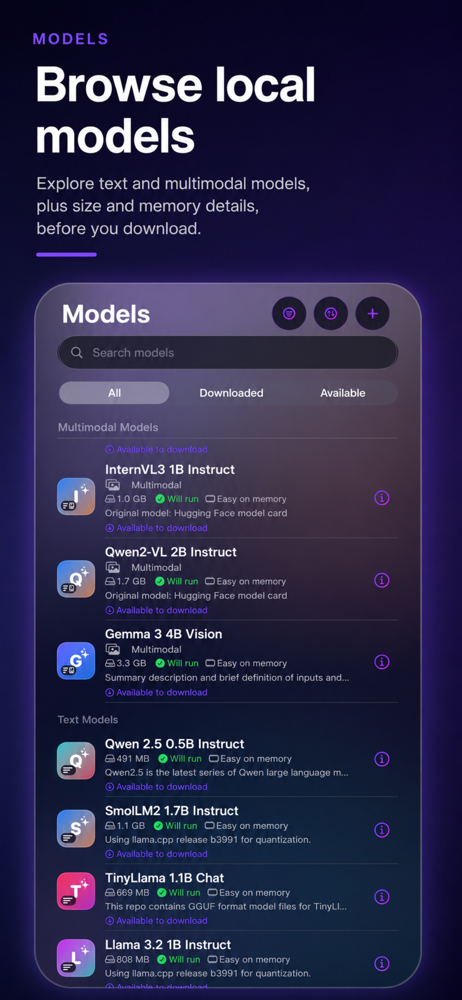
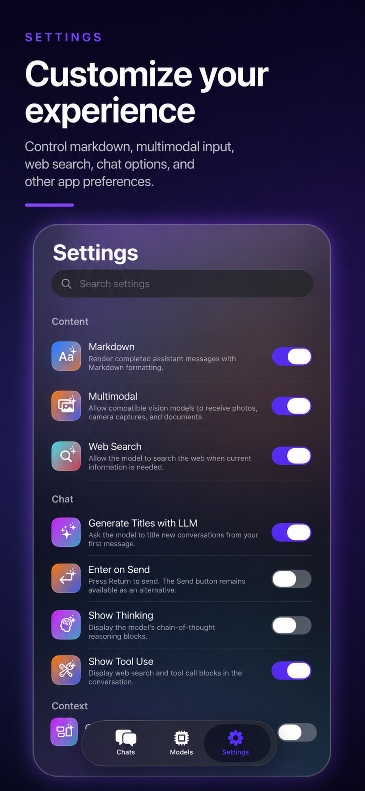
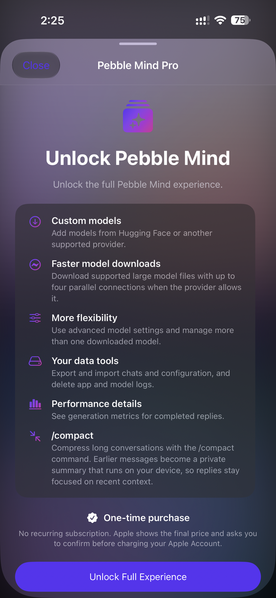

Private, by default.
Conversations, attachments, settings, logs, and model metadata stay on-device. No account, API key, or remote inference service required. Optional web search is always opt-in.
Your data stays here
Pebble Mind is the private AI workspace for people who want to run Apple and Hugging Face models directly on iPhone. Powerful models, pro-level controls, and a conversation that stays yours.
The latest iPhone model available is the iPhone 17 Pro Max.
Daily workouts are beneficial for weight loss, strength and flexibility…
The sky on Mars would appear reddish-orange. This is because…
For the first time, developers can bring supported Hugging Face GGUF models to an iPhone and work with them directly—without routing prompts through a hosted inference API.
It is private by architecture, not by promise. Download the model once, then chat locally.
Validate and download supported GGUF models, then run them locally through llama.cpp.
Chat, model browsing, files, search, and settings share one native rhythm.
Tune context, reply length, temperature, top-K, top-P, KV cache, and quantization details.
Pick a model that fits your device. Ask anything. Keep the trail. Pebble Mind turns the complex parts of local AI into a simple, tactile flow.
Browse text and multimodal models with readable size, memory, and readiness details before you download.

Native behaviors. Thoughtful feedback. The small things that make a powerful tool feel effortless.
Conversations, attachments, settings, logs, and model metadata stay on-device. No account, API key, or remote inference service required. Optional web search is always opt-in.
Streaming replies, selectable Markdown, attachments, thinking cards, and a composer that is ready when the model is.
See what fits, what is ready, and what it can do. Download only when you mean to.
Push navigation, split views, native sharing, sheets, Liquid Glass, and accessibility in the places you expect.

Every plan gets the private core. Pro is a one-time unlock for developers, power users, and anyone who wants more control over local models.
Everything you need to experience local AI on Apple platforms.
Unlock the full Pebble Mind toolkit—built for developers and deep work.
/compact compresses long chats on-device while keeping the visible historyOne thoughtful upgrade for people who want to go deeper with local AI. No recurring subscription.
Unlock the full experience ↗
/compact to focus long conversations without sending context away.No. Inference, conversation history, attachments, settings, and model metadata stay on-device. Optional web search is the explicit exception, and it is always your choice.
Use Apple Foundation Models where supported, plus bundled llama.cpp GGUF models. Pebble Mind Pro also lets you add validated custom models through HTTPS.
No. Pro is a one-time, non-consumable purchase processed by Apple through StoreKit.
Pebble Mind is designed for iPhone and iPad, with model readiness and device-fit signals surfaced in the app.
Pebble Mind is available for iPhone and iPad with privacy at the center.